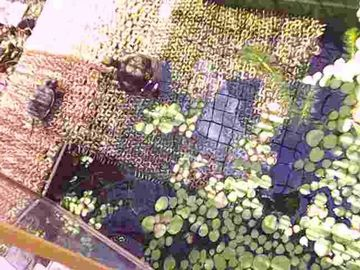

カメカメラ
ケージに超小型WiFiカメラを取り付け、PCやスマホからライブ映像を確認できるようにしている。

使用カメラ
- 解像度: 1920x1080p
- フレームレート: 30fps
- サイズ: 165x16x16mm
- 電源: USB
- 購入価格: 1724円（SHEIN）
WiFiカメラなので映像用の配線が必要なく、価格を考えれば十分な性能と理解すべきだろうが、
画質がイマイチなので本機種はおすすめしない。
電源分岐や防水に＋αの装備と手間が掛かることを考えれば、もっと高画質のカメラを選ぶのが良さそう。